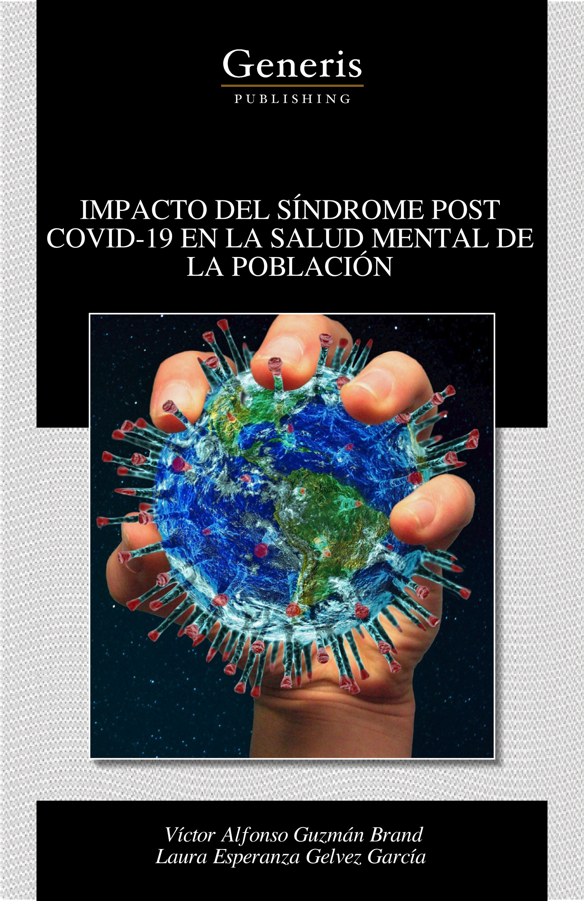
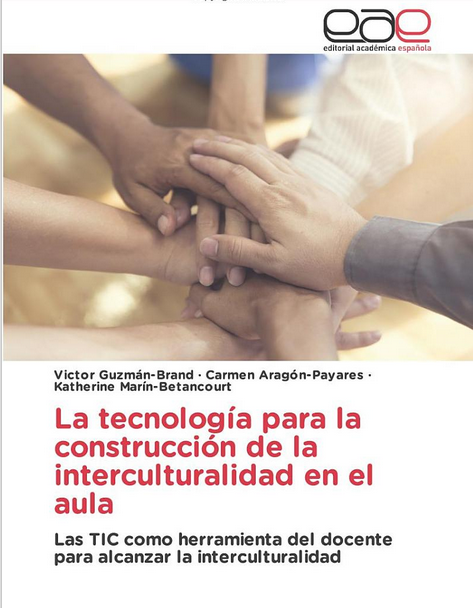
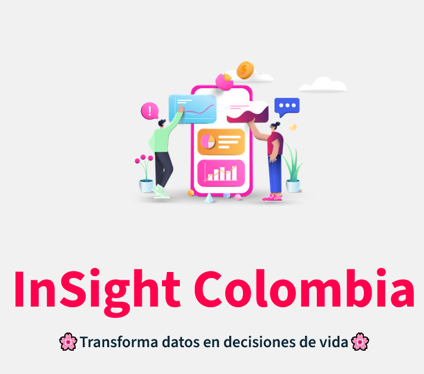
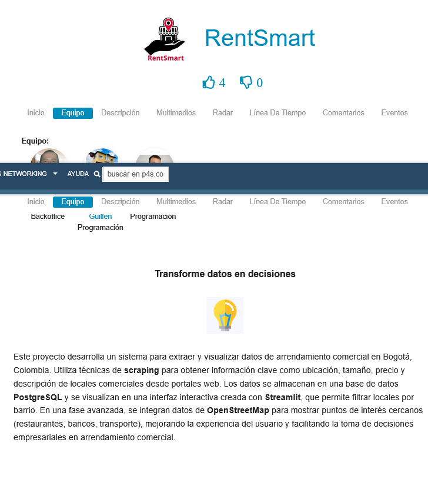
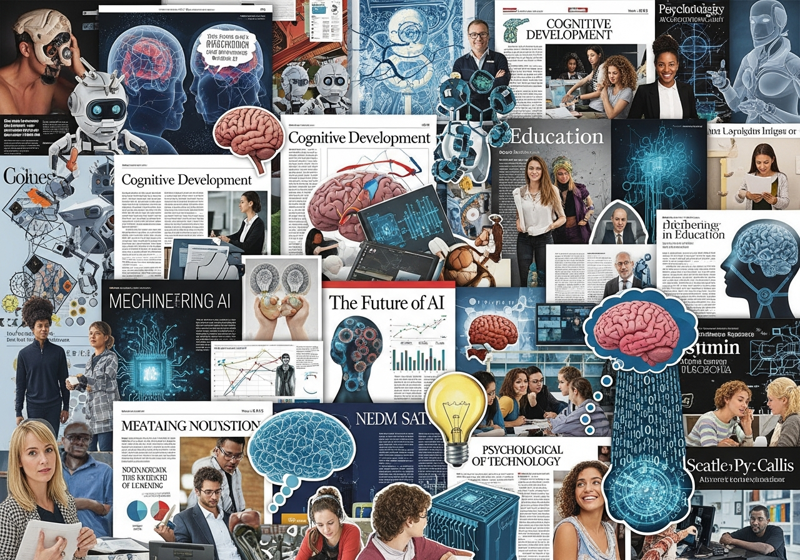
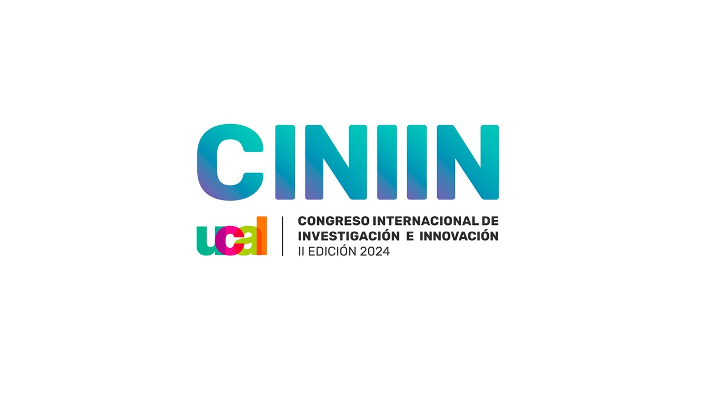
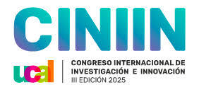
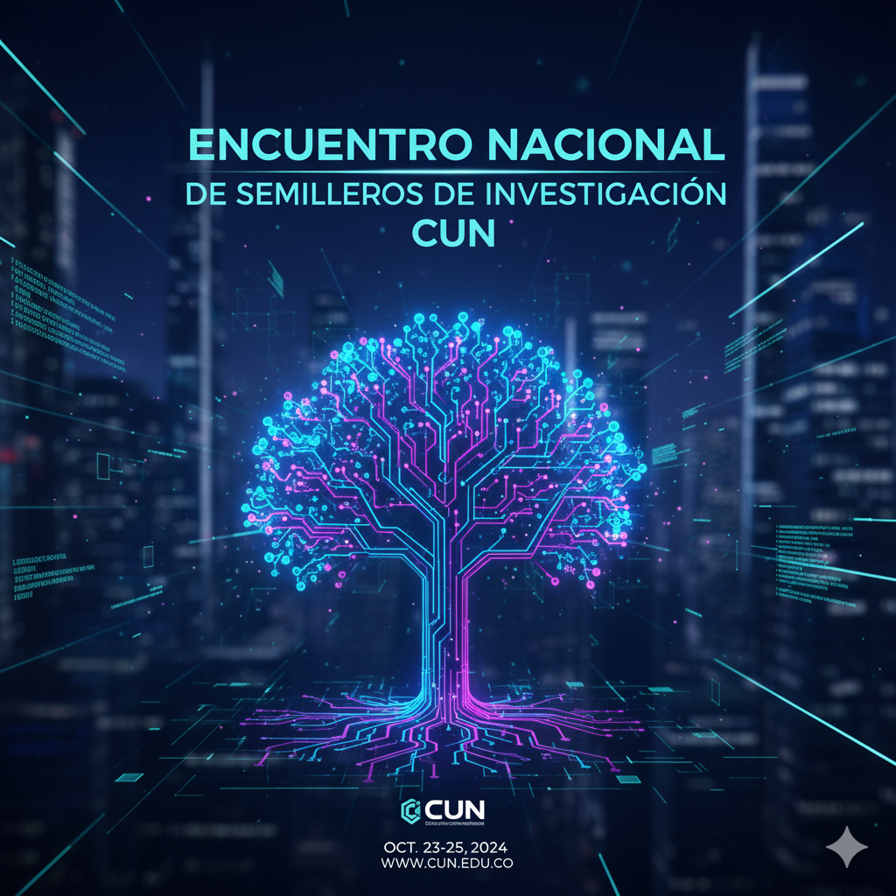

Hola, soy
Investigador Junior (MinCiencias) con enfoque en desarrollo e innovación, especializado en proyectos de intervención social y educativos. Experto en análisis de datos, machine learning y visualización de información. Asesor metodológico en trabajos de grado Pregrado/Maestria/Doctorado y articulos académicos.
Scroll Down
Soy Victor Alfonso Guzmán-Brand, Investigador Junior certificado por Colciencias con enfoque destacado en desarrollo e innovación. Mi trabajo se centra en proyectos de intervención social y educativos, combinando mi formación en psicología con habilidades avanzadas en ingeniería de sistemas y análisis de datos.
Mi experiencia abarca desde el acompañamiento psicosocial hasta la implementación de soluciones tecnológicas basadas en datos. Soy proactivo, orientado al logro y al servicio, con habilidades para trabajar en equipo y atención a los detalles.
Tecnologías y herramientas con las que trabajo:
Artículos Publicados
Artículos Evaluados

Publicación
Publicación académica con ISBN 979-8-88676-051-4. Investigación en el área de desarrollo social y educativo.

Publicación
Segunda publicación académica con ISBN 978-620-2-09946-2. Contribución al conocimiento en psicología y educación.

Concurso Nacional
Proyecto finalista en el Concurso Nacional "Datos a la U". Diseño de aplicación innovadora para análisis de datos educativos.

Competencia
Participación en Hackathon TalentoTECH. Desarrollo de solución tecnológica innovadora en tiempo limitado.
Hackathon
Hackathon enfocado en Inteligencia Artificial. Desarrollo de soluciones basadas en IA para problemas reales.

Investigación
Amplia producción académica con 24 artículos publicados en revistas indexadas y ponente conferencias internacionales.
Pasantía Internacional
Pasantía internacional de investigación DELFÍN 2025. Colaboración con instituciones internacionales.

Congreso Internacional
Ponente Congreso Internacional de Investigación e Innovación Lima-Peru /19-29 octubre de 2024

Congreso Internacional
Ponente Congreso Internacional de Investigación e Innovación Lima-Peru /19-29 octubre de 2025

Ponencia
Ponente Encuentro Nacional de Semilleros de Investigación CUN-2025-01 /07 de julio de 2025
Estoy siempre abierto a discutir nuevos proyectos, ideas creativas o oportunidades de colaboración. No dudes en contactarme.
+57 311 282 9371
+57 320 226 8835
Bogotá D.C., Colombia